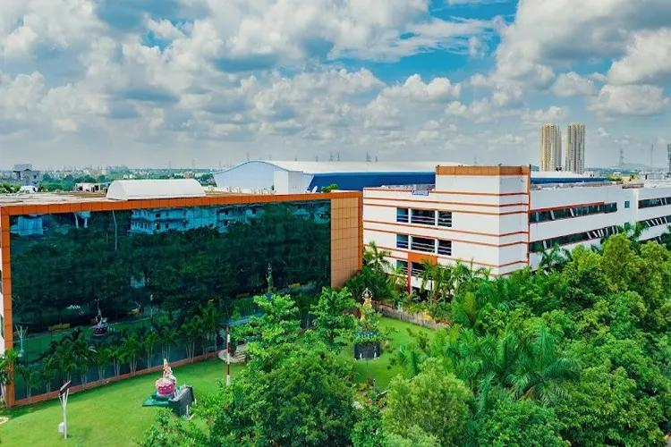

ST. JOSEPH'S INSTITUTE OF TECHNOLOGY
OMR, CHENNAI - 119
DEPARTMENT OF ARTIFICIAL INTELLIGENCE AND DATA SCIENCE

St. Joseph's Institute of Technology is a higher education institution in OMR, Chennai, India, established in the year 2011 with 6 UG courses (B.E. – CSE, ECE, EEE & Mechanical Engineering, B.Tech. IT and B.Tech. Artificial Intelligence and Data Science).
MBA has been offered from the year 2022.
Our college is affiliated to Anna University and approved by AICTE.
The courses offered from the inception (B.E. – CSE, ECE, Mechanical Engineering and B.Tech. IT) were accredited by NBA in 2017 within a short span of 6 years since inception.
The institution was granted Autonomous Status by UGC in 2022, which reflects its commitment to quality education.
Copyrights. All Rights Reserved.